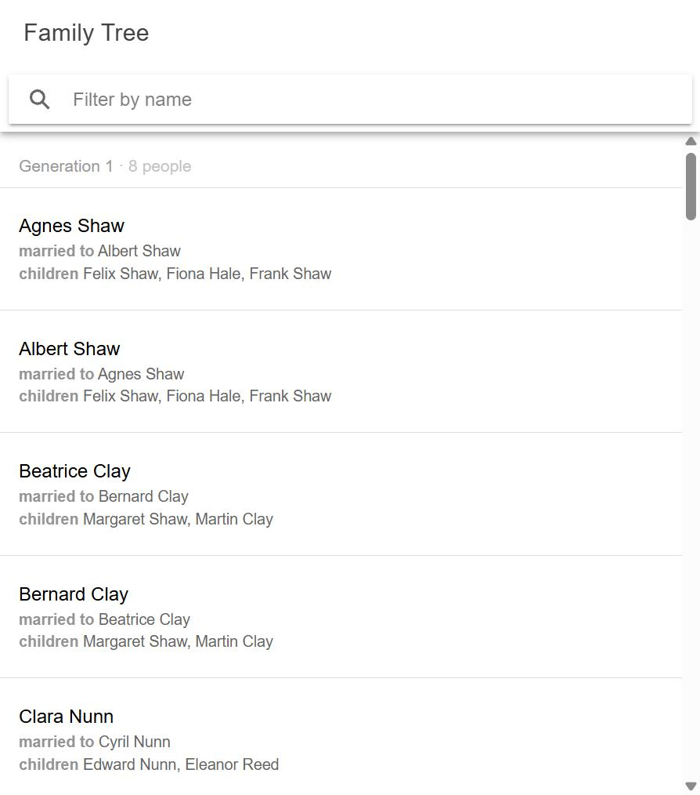
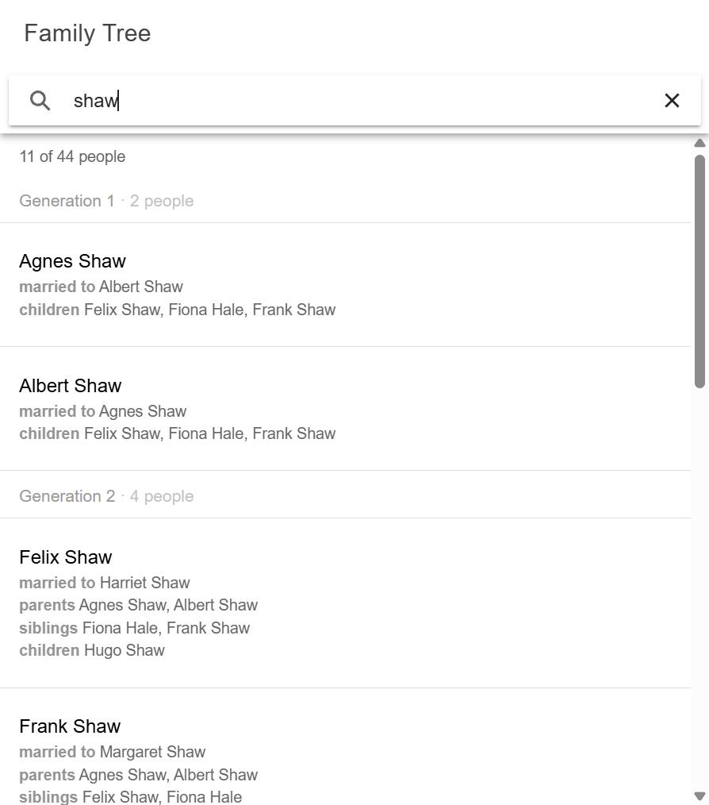

The service
What it is, where it runs, and how to talk to it.
The Family Tree API answers questions about one specific family: who is married to whom, who descends from whom, and how the whole tree divides into generations. It is read-only. There are no mutations, no accounts and no API keys — every request is anonymous, and every response is the same for everybody.
The service is FastAPI with a Strawberry GraphQL schema, built from
apps/api/ in the
stevemarvell/boris
repository and deployed to Railway. The tree itself is not a database:
it is data/family.json, a file committed to the repository
and copied into the container image. The API reads it once at startup,
so the data changes only when a deployment does.
| Endpoint | Method | Purpose |
|---|---|---|
| /graphql | POST | Every query. JSON body of {"query": "..."}, JSON response. |
| /graphql | GET | GraphiQL, the in-browser explorer Strawberry ships with. Development only — see Try it. |
| /health | GET | Liveness, plus the number of people loaded. |
| / | GET | This manual. It ships inside the API image, so it is always the manual for the deployment serving it. |
The page you are reading is what / returns; everything
else here is JSON. The smallest useful request is a single round trip
with curl:
curl -s https://api-production-53f7b.up.railway.app/graphql \
-H 'content-type: application/json' \
-d '{"query":"{ status }"}'{"data":{"status":"ok"}}Railway lets an idle container sleep, so the very first request after a quiet spell can take a few seconds while it wakes. Everything after that is fast — the whole tree is in memory.

generations query.
The data model
Two stored relationships; everything else computed.
A person is a name plus two facts about other people: the parents they descend from, and the spouse they married. That is the entire stored record. On disk a person looks like this:
{
"id": "fred-shaw",
"name": "Fred Shaw",
"parents": ["frank-shaw", "margaret-shaw"],
"spouse": "ellie-shaw"
}Children, siblings, grandparents, cousins, descendants and generation are not stored. They are computed from those two fields each time you ask for them.
Stored
idnameparentsspouse
Derived on request
children— everyone naming you as a parentsiblings— everyone sharing a parent with yougrandparents— your parents' parentscousins— the children of your parents' siblingsdescendants— children, their children, on downgeneration— depth from the oldest ancestors
Why derive rather than store
Because a file that can contradict itself eventually will. If a child list were stored alongside the parent lists, the two could disagree — Fred could name Frank as a parent while Frank's child list omitted Fred, and nothing in the data would say which side was right. Deriving removes the question: there is exactly one place each fact lives, so there is nothing to keep in sync and no reconciliation to get wrong.
The cost is paid at read time, and it is small — the tree is
44 people held in memory. The benefit is that the same walk that
produces children also produces siblings,
cousins and descendants, so those answers
cannot drift apart from each other either.
Ordering and empty results
Every list of people comes back sorted by name, then by id as a tiebreaker. That ordering is stable, so a client can render a list without sorting it again.
Nothing is null because it is empty. A person with no children gets
[], not null; the only nullable fields in the
schema are spouse (an unmarried person) and the
person query itself (an id nobody has).
Generations
A generation is a depth measured from the oldest ancestors. Everyone
with no recorded parents starts at depth 0, and each child
sits one below the deepest of their parents.
That rule alone would misplace anyone who married into the family: they
have no parents in the data, so descent would put them in the oldest
generation regardless of who they married. A second pass fixes it by
lifting a parentless person to sit beside their spouse. It is why Ellie
Shaw — who has parents of her own in this tree — and Tom Baker, who does
not, both appear at depth 2 next to the people they married.
What is rejected
The tree is validated once, at startup, and refuses to load if it is inconsistent.
Validation is not a per-request concern. The whole file is checked when
the process starts, and a failure raises DataError before
the service accepts traffic — a bad tree is a failed deployment, not a
set of odd answers. Five conditions are rejected:
| Condition | Why it is fatal |
|---|---|
| Duplicate id | Two records claiming fred-shaw means every lookup for that id is ambiguous. The first duplicate seen aborts the load. |
| Unknown parent | A person naming a parent id that is not in the file. Nothing could resolve that edge, so parents, grandparents and generation would all be built on a dangling reference. |
| Unknown spouse | The same problem on the marriage edge: a spouse id nobody in the file has. |
| One-sided marriage | Marriage is stored on both people and must agree. If A names B, then B must name A. A one-sided record would make spouse depend on which person you asked. |
| Self-parenting | A person listing their own id among their parents. It is a cycle of length one, and it has no meaning. |
Parent cycles
A longer cycle — A is B's parent, B is C's, C is A's — is caught later,
when generations are computed. The depth pass assigns a person only once
every parent has a depth, so a cycle starves: each member waits on
another member that is also waiting, and the pass settles with all of
them unassigned. The service compares how many people got a depth
against how many exist and raises DataError naming the
people involved.
Walking descendants never expands the same person twice, so
a cycle surfaces as that error rather than as a request that hangs.
Queries
Four root fields. No mutations, no subscriptions.
| Field | Arguments | Type | Returns |
|---|---|---|---|
| status | — | String! | The literal "ok". A liveness probe reachable through GraphQL as well as through /health. |
| people | — | [Person!]! | Everyone in the tree, in file order — this is the one list that is not sorted by name. |
| person | id: ID! | Person | One person by id, or null if no one has that id. An unknown id is not an error. |
| generations | — | [Generation!]! | The whole tree grouped by depth, oldest generation first. |
Generation
| Field | Type | Meaning |
|---|---|---|
| depth | Int! | 0 for the oldest generation, counting up. |
| people | [Person!]! | Everyone at that depth, sorted by name. |
In the current tree generations returns four groups, at
depths 0 through 3, holding 8, 15, 16 and 5
people.
The Person type
Two stored fields, six derived ones. All of them nest.
| Field | Type | Source | Meaning |
|---|---|---|---|
| id | ID! | stored | Stable slug, e.g. fred-shaw. The key person(id:) takes. |
| name | String! | stored | Display name, e.g. Gemma Hale-Nunn. Not unique by contract. |
| parents | [Person!]! | stored | Zero or two in this tree. Empty for anyone whose parents are not recorded. |
| spouse | Person | stored | null if unmarried. Always symmetric — the spouse names them back. |
| children | [Person!]! | derived | Everyone who lists this person among their parents. |
| siblings | [Person!]! | derived | Anyone sharing at least one parent, excluding the person. A person with no recorded parents has no siblings, even if others also have none. |
| grandparents | [Person!]! | derived | The parents of the parents, de-duplicated. |
| cousins | [Person!]! | derived | The children of a parent's siblings. Excludes the person and their own siblings; de-duplicated, since a half-sibling can make an aunt reachable through either parent. |
| descendants | [Person!]! | derived | Children, their children, and on down. Flat, not nested, and sorted by name like every other list. |
| generation | Int! | derived | The same depth generations groups by. |
Every relationship field returns Person, so they nest to
any depth you like — person.parents.siblings.children is a
legal path. Ask only for what you need: each level is another walk over
the tree.
Note the asymmetry between cousins and marriage.
cousins follows blood — a parent's sibling's
children — so the spouse of an aunt or uncle contributes nothing on
their own. Gemma Hale-Nunn's cousins come through Fiona Hale, her mother
and a Shaw by birth, not through Gregory Hale, who married in.

Try it
Edit the query and run it against the live service. Responses below are not canned — they come from the deployed API.
Press Run query.The first run may pause for a few seconds while Railway wakes the container. If the browser reports a network failure rather than a response, the request was blocked before it left — see CORS.
Try it
This deployment serves the manual without its query console. The queries are all still here — run them yourself with curl.
In development this section is an editable box with a
Run query button that posts to
/graphql on this origin. A deployment serving real data
should not also host an unauthenticated console for querying it, so the
console is gated on the same API_ENVIRONMENT variable that
gates the GraphQL IDE and schema introspection, and like them it is off
unless the variable says development.
Nothing else is withheld. Every query below is exactly the one the console would have sent, and every response is one the service returned. Send one yourself in a single round trip:
curl -s https://api-production-53f7b.up.railway.app/graphql \
-H 'content-type: application/json' \
-d '{"query":"{ status }"}'{"data":{"status":"ok"}}
Swap { status } for any query in
Worked examples — it is a JSON string, so the
newlines a multi-line query needs become \n, or pass the
body from a file with -d @query.json.
To get the console back, run the API with
API_ENVIRONMENT=development. That also restores the
GraphQL IDE at /graphql, which is the better tool once you
are editing queries rather than reading them — and it is why the
variable belongs on a throwaway pull request environment rather than on
one serving data that matters.
Worked examples
Real ids, and the responses the deployed service actually returned.
One person and all six derived fields
Fred Shaw sits in the middle of the tree, which makes him the useful case: he has parents, a spouse, children, a sibling, four grandparents and five cousins.
{
person(id: "fred-shaw") {
id
name
generation
parents { id name }
spouse { id name }
children { id name }
siblings { id name }
grandparents { id name }
cousins { id name }
descendants { id name }
}
}{
"data": {
"person": {
"id": "fred-shaw",
"name": "Fred Shaw",
"generation": 2,
"parents": [
{ "id": "frank-shaw", "name": "Frank Shaw" },
{ "id": "margaret-shaw", "name": "Margaret Shaw" }
],
"spouse": { "id": "ellie-shaw", "name": "Ellie Shaw" },
"children": [
{ "id": "daisy-shaw", "name": "Daisy Shaw" },
{ "id": "sam-shaw", "name": "Sam Shaw" }
],
"siblings": [
{ "id": "sally-baker", "name": "Sally Baker" }
],
"grandparents": [
{ "id": "agnes-shaw", "name": "Agnes Shaw" },
{ "id": "albert-shaw", "name": "Albert Shaw" },
{ "id": "beatrice-clay", "name": "Beatrice Clay" },
{ "id": "bernard-clay", "name": "Bernard Clay" }
],
"cousins": [
{ "id": "gemma-hale", "name": "Gemma Hale-Nunn" },
{ "id": "george-hale", "name": "George Hale" },
{ "id": "hugo-shaw", "name": "Hugo Shaw" },
{ "id": "isaac-clay", "name": "Isaac Clay" },
{ "id": "ivy-clay", "name": "Ivy Clay" }
],
"descendants": [
{ "id": "daisy-shaw", "name": "Daisy Shaw" },
{ "id": "sam-shaw", "name": "Sam Shaw" }
]
}
}
}
Fred's descendants and children match because
his children have no children yet. The next example shows what
descendants does when the line runs deeper.
Descendants down the whole line
Albert Shaw is at the top of the tree: no parents, no siblings, no grandparents, no cousins. His three children fan out into eleven descendants across three generations, returned flat and sorted by name rather than as a nested structure.
{
person(id: "albert-shaw") {
id
name
generation
spouse { name }
parents { id }
siblings { id }
grandparents { id }
cousins { id }
children { id name }
descendants { id name }
}
}{
"data": {
"person": {
"id": "albert-shaw",
"name": "Albert Shaw",
"generation": 0,
"spouse": { "name": "Agnes Shaw" },
"parents": [],
"siblings": [],
"grandparents": [],
"cousins": [],
"children": [
{ "id": "felix-shaw", "name": "Felix Shaw" },
{ "id": "fiona-hale", "name": "Fiona Hale" },
{ "id": "frank-shaw", "name": "Frank Shaw" }
],
"descendants": [
{ "id": "daisy-shaw", "name": "Daisy Shaw" },
{ "id": "felix-shaw", "name": "Felix Shaw" },
{ "id": "fiona-hale", "name": "Fiona Hale" },
{ "id": "frank-shaw", "name": "Frank Shaw" },
{ "id": "fred-shaw", "name": "Fred Shaw" },
{ "id": "gemma-hale", "name": "Gemma Hale-Nunn" },
{ "id": "george-hale", "name": "George Hale" },
{ "id": "hugo-shaw", "name": "Hugo Shaw" },
{ "id": "sally-baker", "name": "Sally Baker" },
{ "id": "sam-shaw", "name": "Sam Shaw" },
{ "id": "toby-baker", "name": "Toby Baker" }
]
}
}
}
descendants follows parentage only, so the people who
married into those lines — Margaret Shaw, Harriet Shaw, Gregory Hale,
Ellie Shaw, Tom Baker — are absent. They are spouses of descendants,
not descendants.
The empty cases
Nora Pike is unmarried and childless, which is the clearest look at how
absence is represented: spouse is null, and
every list that has no members is []. She still has
siblings, because her parents are recorded.
{
person(id: "nora-pike") {
id
name
generation
spouse { name }
children { name }
siblings { id name }
cousins { id name }
descendants { name }
}
}{
"data": {
"person": {
"id": "nora-pike",
"name": "Nora Pike",
"generation": 1,
"spouse": null,
"children": [],
"siblings": [
{ "id": "nancy-nunn", "name": "Nancy Nunn" },
{ "id": "neville-pike", "name": "Neville Pike" }
],
"cousins": [],
"descendants": []
}
}
}
Her cousins list is empty for a structural reason worth
understanding: cousins are the children of a parent's siblings, and
Nora's parents — Douglas and Dorothy Pike — have no recorded parents,
so they have no siblings, so there are no aunts or uncles to have
children. An empty list here means "none in this data", not "none in
life".
Cousins through one side of a marriage
Gemma Hale-Nunn shows the same rule from the other direction. Her grandparents list has two entries, not four, and her cousins all arrive through her mother.
{
person(id: "gemma-hale") {
id
name
generation
parents { id name }
grandparents { id name }
siblings { id name }
cousins { id name }
spouse { name }
}
}{
"data": {
"person": {
"id": "gemma-hale",
"name": "Gemma Hale-Nunn",
"generation": 2,
"parents": [
{ "id": "fiona-hale", "name": "Fiona Hale" },
{ "id": "gregory-hale", "name": "Gregory Hale" }
],
"grandparents": [
{ "id": "agnes-shaw", "name": "Agnes Shaw" },
{ "id": "albert-shaw", "name": "Albert Shaw" }
],
"siblings": [
{ "id": "george-hale", "name": "George Hale" }
],
"cousins": [
{ "id": "fred-shaw", "name": "Fred Shaw" },
{ "id": "hugo-shaw", "name": "Hugo Shaw" },
{ "id": "sally-baker", "name": "Sally Baker" }
],
"spouse": null
}
}
}Gregory Hale married in and has no recorded parents, so he contributes no grandparents and no siblings — and therefore no cousins. Every one of Gemma's cousins descends from Agnes and Albert Shaw. Note also that this relationship is reciprocal: Gemma appears in Fred Shaw's cousin list in the first example, and Fred appears in hers.
The whole tree by generation
This is the query the web app runs on load, minus the relationship fields it also asks for.
{
generations {
depth
people { name }
}
}{
"data": {
"generations": [
{
"depth": 0,
"people": [
{ "name": "Agnes Shaw" },
{ "name": "Albert Shaw" },
{ "name": "Beatrice Clay" },
{ "name": "Bernard Clay" },
{ "name": "Clara Nunn" },
{ "name": "Cyril Nunn" },
{ "name": "Dorothy Pike" },
{ "name": "Douglas Pike" }
]
},
{
"depth": 1,
"people": [
{ "name": "Edward Nunn" },
{ "name": "Eleanor Reed" },
{ "name": "Felix Shaw" },
{ "name": "Fiona Hale" },
{ "name": "Frank Shaw" },
{ "name": "Gregory Hale" },
{ "name": "Harriet Shaw" },
{ "name": "Iris Clay" },
{ "name": "Julian Reed" },
{ "name": "Kathleen Pike" },
{ "name": "Margaret Shaw" },
{ "name": "Martin Clay" },
{ "name": "Nancy Nunn" },
{ "name": "Neville Pike" },
{ "name": "Nora Pike" }
]
},
{
"depth": 2,
"people": [
{ "name": "Ellie Shaw" },
{ "name": "Fred Shaw" },
{ "name": "Gemma Hale-Nunn" },
{ "name": "George Hale" },
{ "name": "Hugo Shaw" },
{ "name": "Isaac Clay" },
{ "name": "Ivy Clay" },
{ "name": "Jasper Reed" },
{ "name": "Kara Pike" },
{ "name": "Keith Pike" },
{ "name": "Oliver Nunn" },
{ "name": "Olivia Vance" },
{ "name": "Peter Vance" },
{ "name": "Ruth Nunn" },
{ "name": "Sally Baker" },
{ "name": "Tom Baker" }
]
},
{
"depth": 3,
"people": [
{ "name": "Daisy Shaw" },
{ "name": "Rory Nunn" },
{ "name": "Rosie Nunn" },
{ "name": "Sam Shaw" },
{ "name": "Toby Baker" }
]
}
]
}
}
Eight people here married in and have no parents in the data: Gregory
Hale, Harriet Shaw, Iris Clay, Julian Reed and Kathleen Pike at depth
1, and Peter Vance, Ruth Nunn and Tom Baker at depth
2. Descent alone would have put all eight at depth
0; they appear beside their spouses instead because of the
levelling pass.
Errors
GraphQL answers with 200 and an errors array; missing data is not an error at all.
An id nobody has is a legitimate answer, not a failure. The request
succeeds and person is null:
{ person(id: "nobody") { name } }{"data":{"person":null}}
A query that does not match the schema is rejected before execution.
The HTTP status is still 200 — the transport worked — and
the failure is reported in errors, with
data null:
{ nope }{
"data": null,
"errors": [
{
"message": "Cannot query field 'nope' on type 'Query'.",
"locations": [{ "line": 1, "column": 3 }]
}
]
}
So a client cannot rely on the status code alone. Check for an
errors array on every response, and treat a non-2xx status
as a transport or infrastructure problem rather than a query problem.
Health
One GET, no GraphQL parsing involved.
curl -s https://api-production-53f7b.up.railway.app/health{"ok":true,"people":44}| Field | Type | Meaning |
|---|---|---|
| ok | boolean | Always true when the endpoint answers. The tree is validated at startup, so a process that serves this at all served a valid tree. |
| people | integer | How many people were loaded — 44 in the current deployment. |
Because the count comes from the loaded tree rather than a constant, it
is the quickest way to tell which build of the data an environment is
running. { status } over GraphQL answers the same liveness
question through the query path, which additionally proves the schema
is serving.
CORS
Browsers need an allowed origin; anything not in a browser does not.
The API and its clients are deployed separately, so every browser request is cross-origin. The service allows origins by regular expression rather than by list, because Vercel gives each preview deployment a generated hostname. Two families of origin are admitted:
| Origin | Who |
|---|---|
| https://<anything>.vercel.app | The web app, production and every preview deployment. |
| http://localhost:<port> http://127.0.0.1:<port> |
Local development and the end-to-end suite. Both spellings of the loopback address are listed, because they are different origins to a browser. |
The page you are reading is not in that table, and does not need to be.
This manual is served by the API itself, from the root of this same
service, so its "try it" console, where it is
enabled, posts to /graphql on the origin it was loaded
from — same-origin, no preflight, no allowance. That also means the
console on a pull request environment's manual exercises that
environment's API rather than production's.
Until this manual moved here it was published by GitHub Pages, and
https://stevemarvell.github.io had to be admitted for its
console to work. It was spelled out in full rather than as a wildcard
over *.github.io, because that domain is shared by every
GitHub user. Nothing needs it now, so it is gone.
Allowed methods and headers
- Methods:
GET,POST,OPTIONS. - Request headers:
content-type. Credentials are not allowed and not needed — there is nothing to authenticate. - Preflight results are cacheable for 600 seconds.
A preflight from an allowed origin answers 200 and echoes
the origin back:
curl -X OPTIONS https://api-production-53f7b.up.railway.app/graphql \
-H 'Origin: https://family-tree-flame-ten.vercel.app' \
-H 'Access-Control-Request-Method: POST' \
-H 'Access-Control-Request-Headers: content-type'
An origin outside those two families is refused at the preflight with
400 Disallowed CORS origin. A POST that skips
the preflight is answered normally but without an
access-control-allow-origin header, so the browser
withholds the response from the page. Either way the failure appears in
the browser as a network error with no status code — which is why a
request that works in curl can still fail in a page.
None of this restricts non-browser clients. curl, a server,
a script or a mobile app sends no Origin header, is subject
to no preflight, and is never blocked. CORS is a browser policy, not an
authorisation model: this API is public, and the origin list exists to
keep other people's web pages from quietly making their users' browsers
call it.